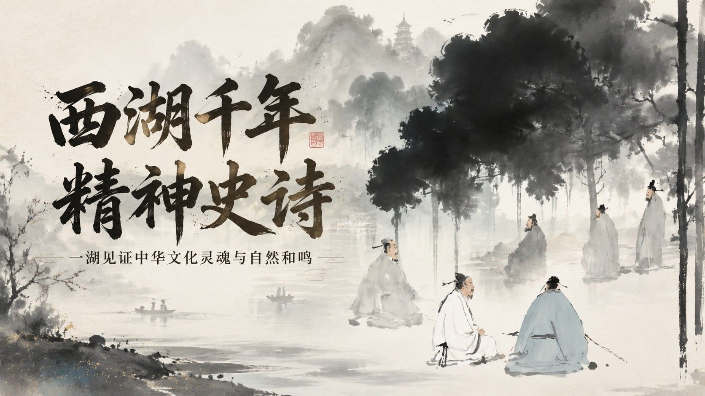
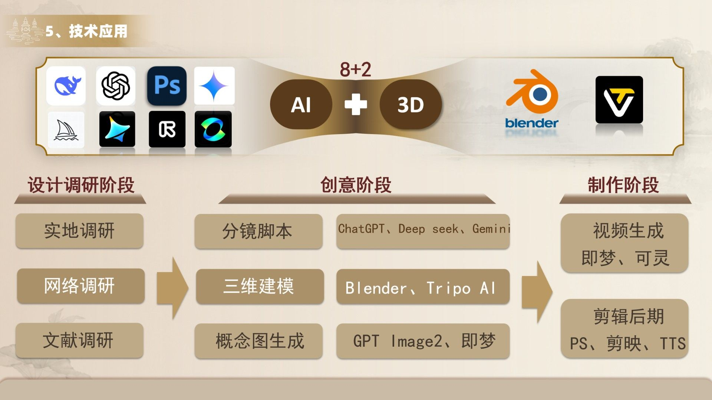
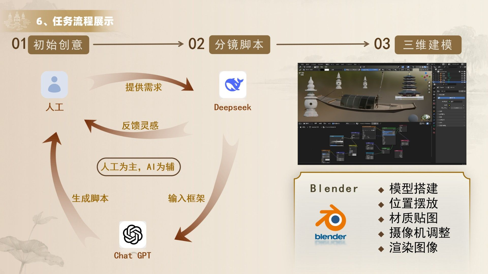
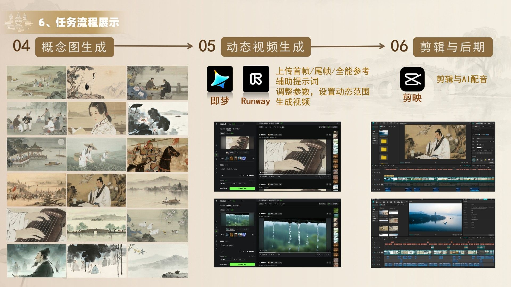

AI人文纪录片
一湖见证中华文化灵魂与自然和鸣

现有关于西湖的影像传播多聚焦于风光展示与旅游宣传，缺少从文化精神层面进行系统梳理与诗性表达的作品。因此，本片试图突破单纯的景观叙事，将西湖置于中国文化发展的历史长河中进行重新审视，探寻其作为中华文明精神载体的深层价值。
文化遗产传播娱乐化、碎片化，缺少深度叙事，公众对西湖十景停留于视觉认知，缺乏文化认知。因此，本片希望通过纪录片的形式，重新建立观众与西湖文化之间的情感连接，让风景回归文化，让山水重新发声。
希望观众在欣赏风景的同时，看见风景背后的文化积淀，在观看历史人物时，感受其跨越时空的精神力量，在湖光山色之间，重新理解中华文明延续至今的内在逻辑。
本片以"西湖不仅是一处风景，更是一种精神存在"为核心主题，将西湖视作承载中华文明记忆的文化镜台。通过"丹青、风骨、忠骨、烟火"四个篇章，引发观众对中华文明的共鸣与认同。
本片整体借鉴中国古代绘画美学，采用"写意、工笔、兼工带写"的视觉风格，同时以"湖镜"为贯穿全片的视觉母题。声音设计融合古琴、编钟、箫等传统器乐，构建具有中国文化韵味的沉浸式视听空间。
本片采用"总—分—总"的篇章式结构，以"西湖是一部流动的精神长卷"为引，通过"丹青""风骨""忠骨""烟火"四个维度展开叙事，展现中华文明生生不息的传承力量。
文化主题纪录片，融合历史人文叙事 + 诗意影像呈现。
围绕杭州西湖展开从丹青→风骨→忠骨→烟火多维度文化挖掘。
"西湖是中国精神的诗性载体"
对西湖自然人文之美的赞叹，对历史传承的共鸣，对家国情怀的敬仰，对市井烟火的眷恋。
让西湖相关的诗句飘荡千年
让古画焕发出新的活力
构建古今对话的沉浸式体验
弘扬中国传统文化与非物质文化遗产
墨水滴下穿越进西湖古画，看水墨诗经的诞生
世代灵魂低语的镜台，引入士大夫的精神山水
以梅花的气节，引出忠骨的碧血丹心
最后从古画转到西湖畔的市井日常
于丹青水墨——铺开西湖作为"精神史诗"的千年美学底色。
接士大夫风骨——展现士大夫的精神家园。
向忠魂烈骨——将湖山升华为民族气节的悲壮镜台，形成全片的情感高潮。
于人间烟火——揭示西湖精神在寻常呼吸中的永恒搏动，完成"山水-人文-时代"的史诗闭环。


